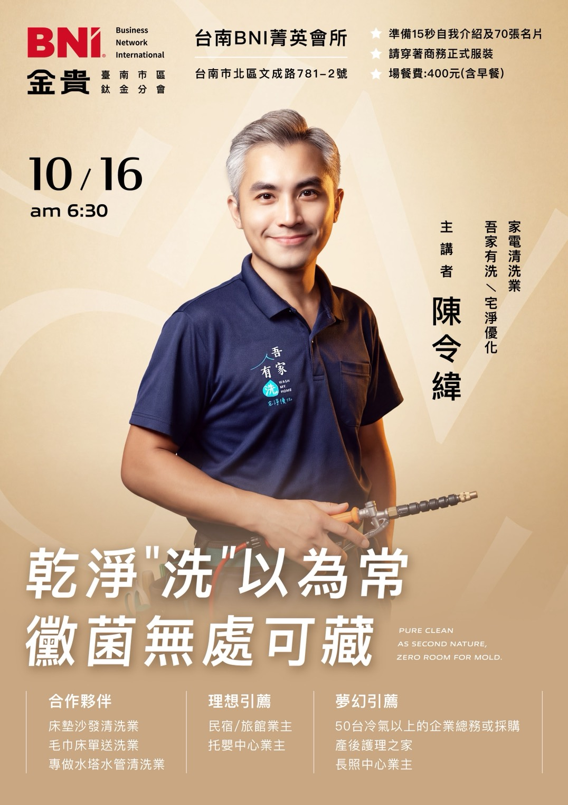

2026-10-16（五）06:30
乾淨「洗」以為常，黴菌無處可藏
主講者：陳令緯・吾家有洗／宅淨優化
冷氣、床墊與沙發看起來乾淨，裡面卻可能藏著黴菌、灰塵與過敏原。這次分享從看不見的清潔死角出發，談健康居家與工作環境，也談家電清洗如何和異業夥伴串聯出合作機會。
點擊播放按鈕，會以直式完整畫面開啟影片。影片由金貴分會官方粉絲團發布；若嵌入播放器因 Facebook 設定或瀏覽器外掛無法載入，可直接前往 Facebook 觀看。
每週主講結束後，影片會從首頁本週主講移到這裡。你可以回看夥伴分享的專業、找到合適的合作切入點，也更認識金貴分會的多元產業。

主講者：陳令緯・吾家有洗／宅淨優化
冷氣、床墊與沙發看起來乾淨，裡面卻可能藏著黴菌、灰塵與過敏原。這次分享從看不見的清潔死角出發，談健康居家與工作環境，也談家電清洗如何和異業夥伴串聯出合作機會。
點擊播放按鈕，會以直式完整畫面開啟影片。影片由金貴分會官方粉絲團發布；若嵌入播放器因 Facebook 設定或瀏覽器外掛無法載入，可直接前往 Facebook 觀看。